| 列表模板是指信息列表页面使用的模板。（制作方法基本同标签模板） |
|
||
| 列表模板制作格式 |
| 列表头 [!--empirenews.listtemp--] 列表内容 [!--empirenews.listtemp--] 列表尾 |
| 说明：第一个[!--empirenews.listtemp--]表示循环开始、第二个[!--empirenews.listtemp--]表示循环结束。 |
| 管理列表模板 | ||||||||||||||||||||||||||||||||||||||||||||||||
| 1、登录后台，单击“模板”菜单，选择“管理列表模板”子菜单，进入管理列表模板界面： | ||||||||||||||||||||||||||||||||||||||||||||||||
| 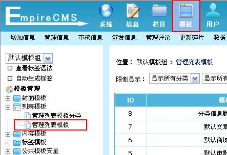 | ||||||||||||||||||||||||||||||||||||||||||||||||
| 2、进入管理列表模板界面： | ||||||||||||||||||||||||||||||||||||||||||||||||
| 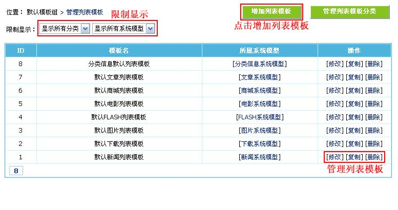 | ||||||||||||||||||||||||||||||||||||||||||||||||
| 3、点击默认新闻列表模板的“修改”进入修改列表模板界面： | ||||||||||||||||||||||||||||||||||||||||||||||||
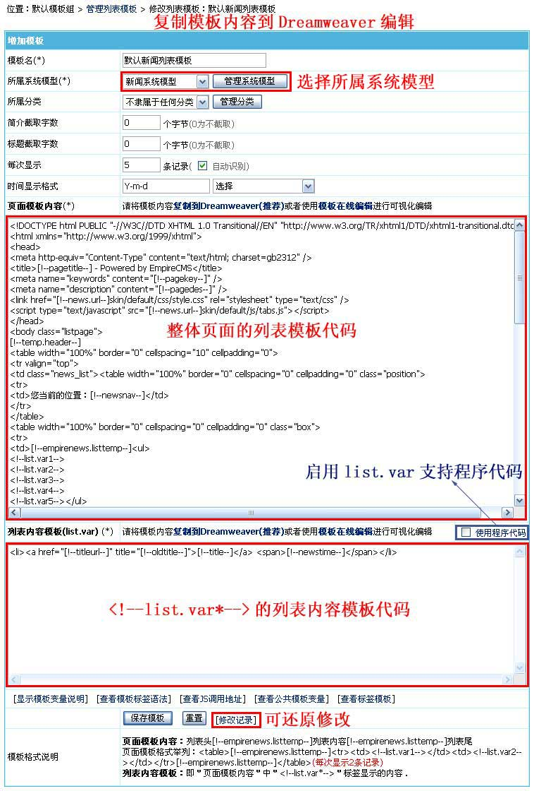
|
||||||||||||||||||||||||||||||||||||||||||||||||
| 4、列表模板支持的变量： | ||||||||||||||||||||||||||||||||||||||||||||||||
(1)、页面模板内容支持的变量
(2)、列表内容模板(list.var)支持的变量
|
| 列表模板制作范例 | ||||
| 实现如下效果： | ||||
| 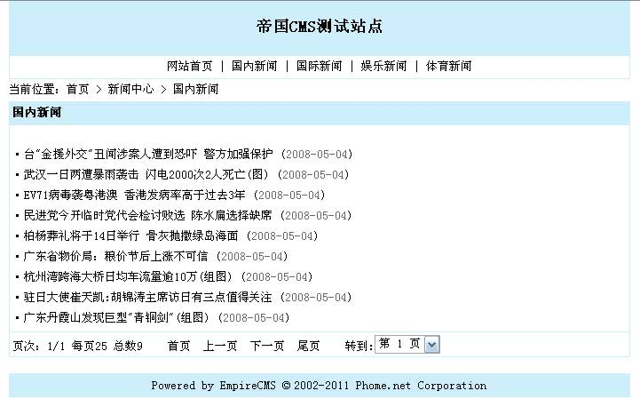 | ||||
| 1、制作列表模板：使用Dreamweaver制作列表模板 | ||||
| 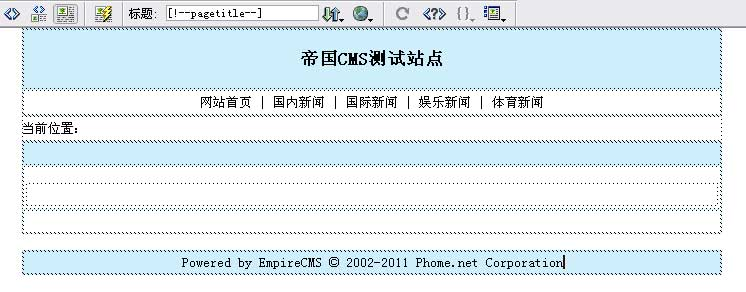 | ||||
| 2. 在制作好的界面加入模板标签及变量： | ||||
| 页面标题变量：[!--pagetitle--]，调用位置如下图①③所示； 导航条变量[!--newsnav--]：调用位置如下图②所示。 分页导行(下拉式)变量：[!--show.page--]，调用位置如下图⑤所示； 插入列表模板内容变量：即列表页所有信息的显示样式变量，如“<!--list.var1-->(每行显示1条信息)”、“<!--list.var2-->(每行显示2条信息)”等，调用位置如下图④所示。 格式：列表头[!--empirenews.listtemp--]列表内容[!--empirenews.listtemp--]列表尾 |
||||
| 图1：设计视图 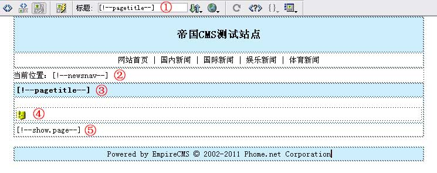 图2： 代码模式 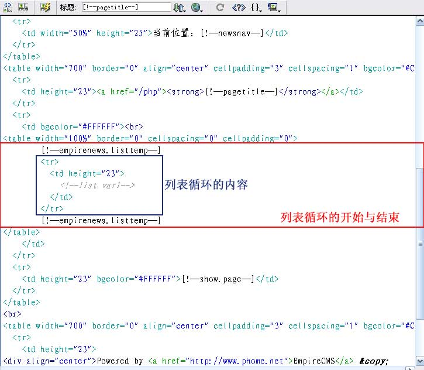 |
||||
| 3、制作列表内容模板：即内容变量<!--list.var1-->所显示的内容。代表每条信息的显示样式。 | ||||
| 如“・台"金援外交"丑闻涉案人遭到恐吓 警方加强保护 (2008-05-04)”, 该样式包括：标题，发布时间，标题链接三部分，分别对应的变量标签为[!--title--]、[!--newstime--]、[!--titleurl--]， 则该信息样式可写为：(Dreamweaver可视化制作) |
||||
| 图1：设计视图 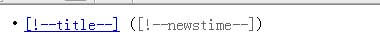 图2： 代码模式 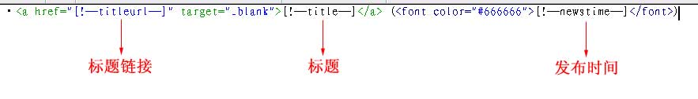 |
||||
| 4、将制作好的列表模板代码拷贝到系统后台“列表模板”中： | ||||
| (1)、单击“模板”菜单 》列表模板-“管理列表模板”，选择右侧的默认新闻列表模板，单击“修改”： | ||||
| 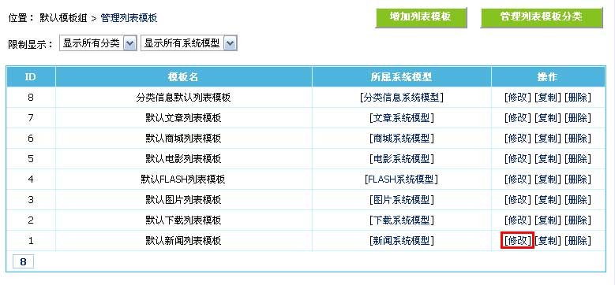 | ||||
| (2)、进入修改默认新闻列表模板界面，将制作好的列表模板代码拷贝进去： | ||||
| 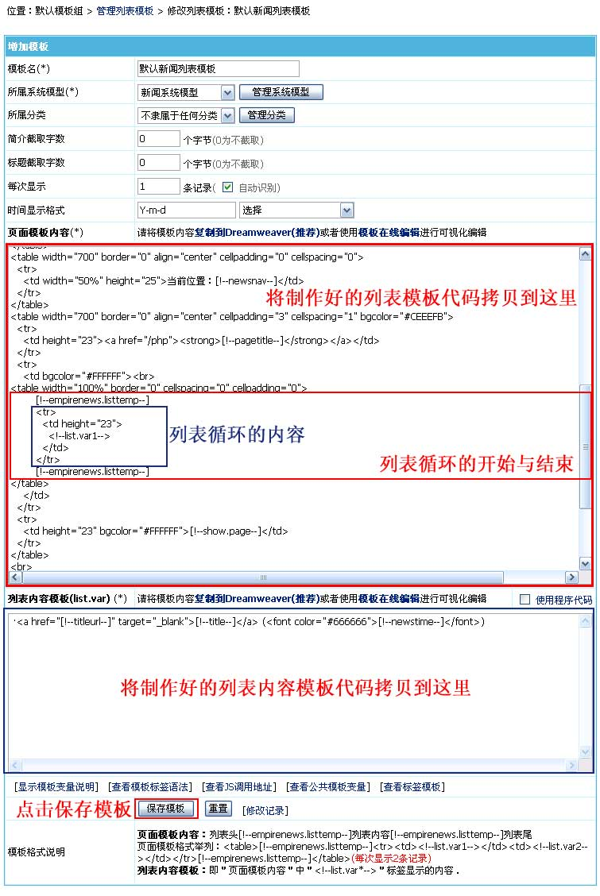 | ||||
| 5、修改模板后，刷新栏目页面，最终列表模板的预览效果： | ||||
| 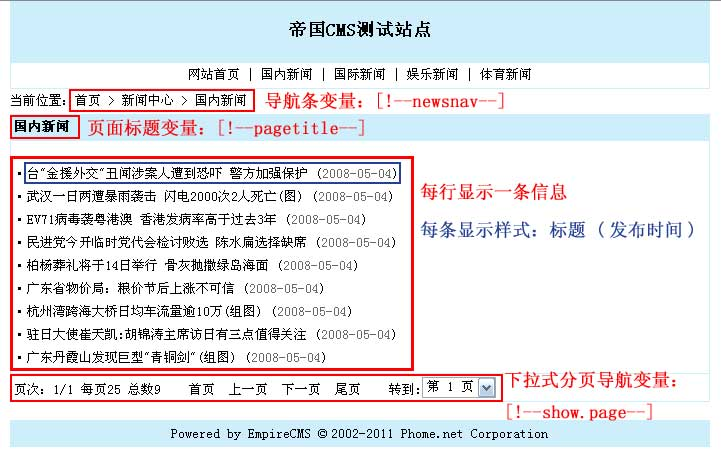 | ||||
| 5、附上面例子模板代码： | ||||
|
| 相关链接 |
| 1、列表模板制作视频教程 |
| 2、标签模板制作教程 |
| 3、帝国CMS功能解密之：模板list.var支持程序代码 |